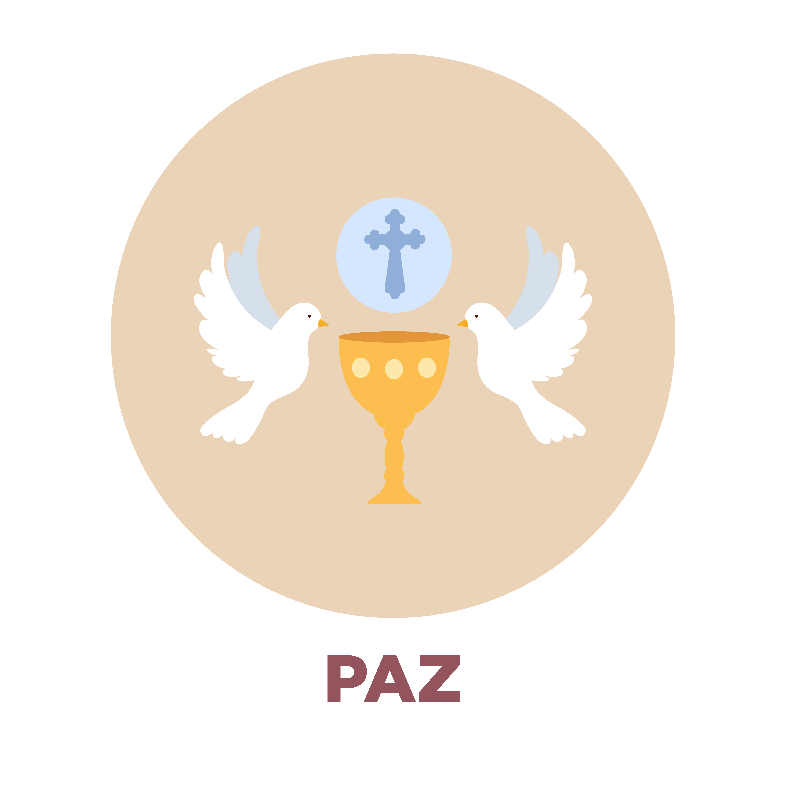

SEGUNDO MOMENTO: Cultivar el don de la Paz.
Pide que apaguen la velita, se sienten y escuchando el canto de San Francisco redacten una cartita-oración a Dios, en dónde cada uno escriba ¿cómo cultivará el don de la Paz que ha recibido? ¿Qué hará en su casa, con sus papás, hermanos o hermanas, con sus abuelos, tíos o primos, con sus amig@s y compañer@s de escuela para cultivar relaciones de paz, de armonía y de misericordia?… En este momento se leen todos los carteles con los dones que se encontraron en la sopa de letras, que completaron en la lluvia de ideas y que jugaron al Rey y la Reina dice y si salió alguno diferente cuando se analizó la historia del árbol en el camino, también se hace referencia a ellos.
Una vez que terminen de escribir su cartita-oración a Dios, siguiendo en un ambiente de recogimiento, de forma organizada invitar a que las niñas, niños o adolescentes busquen a un compañer@ o amig@ y lean su carta dirigida a Dios, dando oportunidad a escuchar también la de su amig@ o compañer@.
Previamente se prepara una maceta y se les da a los participantes una semilla.
Invitar, en ese mismo ambiente a que siete niñas, niños y adolescentes, a que den lectura en voz alta a su carta oración a Dios y al finalizar siembren su semillita en la maceta y a coro se diga: “Te pedimos Señor, que nos ayudes a cultivar el don de la Paz”. Así cada una de las niñas, niños y adolescentes pasen a leer su carta y a sembrar su semillita. Una vez que pasaron los 7 niñ@s o adolescentes escogidos, se pide que l@s demás niñ@s pasen de forma ordenada y siembren su semilla y a coro reciten: “Te pedimos Señor, que nos ayudes a cultivar el don de la Paz”.
Y para finalizar, se invita a hacer un círculo alrededor del CIRIO PASCUAL que sigue encendido y tomados de la mano se reza a coro la Oración al Creador que nos invita el Papa Francisco en la encíclica Fratelli Tutti:
Señor y Padre de la humanidad,
que creaste a todos los seres humanos con la misma dignidad,
infunde en nuestros corazones un espíritu fraternal.
Inspíranos un sueño de reencuentro, de diálogo, de justicia y de paz.
Impúlsanos a crear sociedades más sanas
y un mundo más digno,
sin hambre, sin pobreza, sin violencia, sin guerras.
Que nuestro corazón se abra
a todos los pueblos y naciones de la tierra,
para reconocer el bien y la belleza
que sembraste en cada uno,
para estrechar lazos de unidad, de proyectos comunes,
de esperanzas compartidas. Amén.